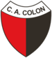

El 15 de abril de 1907, un grupo de amigos y socios que habían decidido alejarse del Santa Fe Footbal Club se reúne en la casa de la familia Baragiola, ubicada en calle Catamarca, entre San Martín y San Jerónimo (hoy Eva Perón 2652) con el objetivo de crear una nueva institución, a partir de los lazos de amistad y camaradería que unían a aquel grupo entusiasta de muchachos. El nombre elegido sería, entonces 'Club United' que tiempo después se castellanizó llamándose, para siempre 'Club Atlético Unión'. Los colores elegidos fueron el rojo y el blanco a bastones verticales, en homenaje al glorioso Alumni de los hermanos Brown, el club que marcó supremacía en la etapa amateur del fútbol argentino. Unión funda con otros clubes la Liga Regional Santafesina, consagrándose Campeón durante cuatro temporadas consecutivas. En pocos años, la institución establece una clara hegemonía futbolística en la ciudad de Santa Fe y alrededores. En 1940 Unión fue el primer club de la ciudad de Santa Fe inscripto en los registros de AFA. La intención de los dirigentes era ingresar directamente al torneo de Primera División, como lo habían hecho otros clubes, pero AFA no lo permitió y Unión debió competir en los viejos y duros torneos de la B. Igualmenete 26 años despues, en 1966 Unión se consagra campeón derrotando en Santa Fe a Talleres de Remedios de Escalada por 3 a 0, ascendiendo a primera divicion. La ambision del Tate seguia intacta y el el 12 de mayo de 2018 Unión logró uno de sus más ansiados objetivos: clasificar a una copa internacional, Jugando la copa Sudamericana 2019 y luego volviendola a jugar en 2020. Pero union nunca baja los brazos y siempre va a ir por mas. VAMOS TATE!!!
Historia
Lun, 30 de Enero 20:00

VS
2
0
Dom,5 de Febrero 21:30
VS

-
-
NUEVO SPONSOR TECNICO
KDY va a vestir a los tatengues, la empresa argentina llego a un acuerdo con Union para vestir en actividades profesionales por un año!!
THIAGO VECINO SE SUMA AL TATE
El jugador de 23 años nacido en Montevideo llega al rojiblanco proveniente de Liverpool Fútbol Club de Uruguay, el contrato sera por 1 año con opción de compra con la institución.